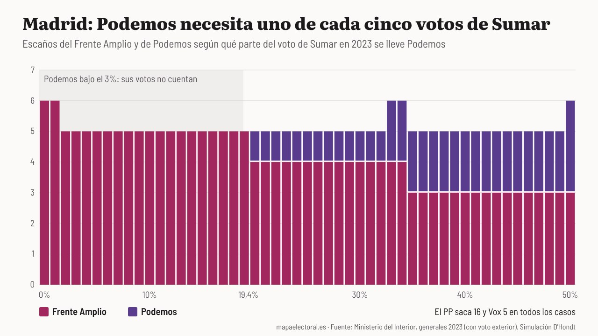

Actualidad · Dos papeletas en Madrid · Madrid
Delgado contra Montero en Madrid: con los votos de 2023, Podemos necesitaría uno de cada cinco votos de Sumar para sacar escaño
Separados, el Frente Amplio y Podemos habrían sacado entre cinco y seis de los seis diputados que Sumar logró en Madrid en 2023. El escaño que se pierde iría al PSOE; el PP se queda en 16 en todos los casos.
Por Nacho G. del Álamo ·

Cada párrafo lleva una etiqueta: dato (cifra comprobable con las fuentes), patrón (relación que se repite, sin afirmar la causa), hipótesis (explicación posible, sin dos fuentes independientes) o contexto (hechos y declaraciones publicados por otros, enlazados). Cómo verificamos
ContextoEn Madrid habrá dos papeletas a la izquierda del PSOE el 29 de noviembre. Emilio Delgado, de Más Madrid, encabezará la lista del Frente Amplio, la coalición de Más Madrid, Comuns, Movimiento Sumar e Izquierda Unida, según Europa Press. Irene Montero será la número uno de Podemos después de unas primarias en las que, como única aspirante, recibió 24.136 votos, también según Europa Press. Efe lo resumió el viernes: las dos fuerzas irán por separado en la mayoría de las provincias, y Madrid es una de ellas.
ContextoHasta el último día hubo ofertas cruzadas. Delgado dijo en TVE que había ofrecido a Montero ir «entre el número dos y el tres» de su lista, según Europa Press:
«Hemos sido extremadamente generosos con Podemos en Madrid. Se le está ofreciendo un puesto de salida, integración en los equipos»
ContextoMontero, en la misma televisión tres días antes, ya había descartado entrar: «No. Nosotras tenemos un acuerdo con ERC y vamos a trabajar, hacer equipo con Gabriel (Rufián)», según Efe.
ContextoCon dos listas en la mesa, he querido saber cuántos diputados cuesta la separación en la provincia que más reparte, 37. He cogido los votos de julio de 2023, cuando Sumar llevaba dentro a Más Madrid, Podemos e IU y sacó 557.780 votos, el 15,5%, y seis escaños. He partido esos votos en dos listas en todas las proporciones posibles, del 0% al 50% para Podemos, y he vuelto a repartir los escaños con la ley D'Hondt. El resto de partidos se queda como estaba.
DatoEl resultado cabe en una línea: separadas, las dos listas habrían sacado cinco o seis diputados entre las dos, nunca menos de cinco. Y el escaño que se pierde no se lo lleva la derecha. Se lo lleva el PSOE, que pasa de 10 a 11. El PP se queda en 16 y Vox en 5 en todos los casos.
Ver la tabla
La barrera del 3%
DatoLa línea que decide casi todo es la barrera legal. Para entrar en el reparto hace falta el 3% de los votos válidos, que en Madrid en 2023 eran 108.260. Con los votos de entonces, Podemos necesitaría el 19,4% de lo que sacó Sumar, casi uno de cada cinco votantes. Por debajo, sus votos no cuentan para ningún escaño. En cuanto la pasa, entra con un diputado.
DatoEl sexto escaño del Frente Amplio, en cambio, se cae enseguida. En 2023, el sexto cociente de Sumar fue de 92.963 votos, y el siguiente en la cola era el undécimo del PSOE, con 91.327. Esa diferencia, multiplicada por seis, da unos 9.800 votos: es lo que Sumar podía perder y seguir con seis diputados, apenas el 1,8% de su voto. Basta con que Podemos se lleve el 2% y no pase la barrera para que ese escaño cambie de manos.
DatoEntre el 20% y el 32%, el reparto queda en cuatro para el Frente Amplio y uno para Podemos. Con el 33% o el 34%, Podemos saca el segundo y la suma vuelve a seis. Del 35% al 49%, tres y dos. Y con un reparto a partes iguales, tres y tres. Los seis escaños solo vuelven en ventanas estrechas.
PatrónEn Madrid la separación cuesta poco porque la provincia es grande. Con la fórmula de Lijphart, la barrera real para entrar con 37 escaños se queda en torno al 2%, por debajo del 3% legal. Por eso aquí manda la barrera de la ley, y no el tamaño de la provincia como en las pequeñas, que contamos en una pieza anterior. Los politólogos José Ramón Montero, sin relación con la candidata, y C. Fernández calcularon que la barrera del 3% «solamente puede funcionar en distritos de más de 24 escaños», según recoge Miguel Ángel Sevilla Duro en un análisis de las elecciones de 2019. Madrid tiene 37.
«el umbral efectivo (real) de los distritos −salvo en Madrid y Barcelona− alcanza el 10,2 por ciento»
El precedente de 2019
DatoMadrid ya votó con dos listas. En noviembre de 2019, Unidas Podemos sacó 463.629 votos, el 13%, y cinco diputados. Más País, el partido de Íñigo Errejón, sacó 201.389, el 5,7%, y dos. Si se suman esos votos y se reparte otra vez, la lista conjunta habría sacado los mismos siete. Aquella vez la separación no costó ningún escaño en Madrid.
Ver la tabla
PatrónLa diferencia con 2019 está en el tamaño de la lista pequeña. Más País pasó el 3% con holgura y cada una de sus papeletas contó. Si Podemos se queda por debajo, como en la franja gris del primer gráfico, sus votos se pierden y la separación sí tiene coste.
Lo que dicen los protagonistas
ContextoDelgado ya avisaba de la dificultad el día antes del cierre del plazo: «Es más fácil hablar de la unidad, que llevarla a cabo», según Europa Press. Y dejó la puerta abierta: «Está la puerta abierta, está la mano tendida y si la quieren aprovechar tienen toda la posibilidad».
ContextoDesde Podemos, el portavoz Pablo Fernández dio por cerrada la negociación el lunes con un refrán: «agua pasada no mueve molino», según La Región. Confirmó además que Jacinto «Tito» Morano irá de número dos de Montero en Madrid. Podemos se presentará con listas propias en casi todo el país, salvo en Cataluña, Canarias y la Comunidad Valenciana.
Lo que la cuenta no dice
HipótesisEsto es aritmética, no una previsión. Supone que los votantes de Sumar en 2023 vuelven a votar a una de las dos listas y que el resto de partidos saca lo mismo que entonces. No será así: unos se irán al PSOE, otros a la abstención. Cuando Podemos e IU fueron juntos en 2016, «cerca de un 10 % de los votantes de la fuerza minoritaria en las elecciones de 2015 desertaron de seguir a su partido un año después», según un estudio de Víctor Gago Rivas (Universidad de Salamanca) recogido por Cordópolis. Separarse también puede mover votos, y esta cuenta no lo recoge.
HipótesisTampoco sé cuánto del voto de Sumar en 2023 era de Podemos. No hay un dato oficial que lo separe, y por eso el gráfico muestra todos los repartos en lugar de elegir uno.
DatoPara el 29N, la cuenta queda así: con los votos de 2023 y en dos listas, el Frente Amplio y Podemos habrían sacado entre cinco y seis diputados en Madrid, y el que se pierde iría al PSOE. Lo que decide si Podemos tiene escaño es una cifra: uno de cada cinco votos de lo que fue Sumar.
Explora el mapa por sección · Más piezas: El mapa final de coaliciones de la izquierda · Dónde puede costar más la división a la izquierda · La suma en Canarias
Método y fuentes
- Qué se compara
- El reparto de los 37 escaños de Madrid en 2023 tal como fue y el que habría salido si los votos de Sumar se hubieran partido en dos listas, el Frente Amplio y Podemos, en todas las proporciones del 0% al 50%, con la regla D'Hondt y la barrera del 3%. Se añade el precedente de noviembre de 2019, con Unidas Podemos y Más País por separado.
- Límites
- Es una simulación aritmética, no una previsión: supone que los votantes de Sumar en 2023 votan a una de las dos listas y que el resto de partidos saca lo mismo. No hay un dato oficial de qué parte del voto de Sumar en 2023 era de Podemos, por eso se muestran todos los repartos. No recoge votantes que se vayan al PSOE o a la abstención. Se usan los votos por mesa de Interior con el voto exterior, que pueden diferir en unos pocos votos del escrutinio oficial.
- Cómo se calcula
- Porcentajes sobre votos a candidaturas, salvo la participación, que es sobre el censo. Cifras reproducibles con los scripts del expediente de la pieza. Metodología de Actualidad · Metodología del Atlas
- Fuentes
- Ministerio del Interior, resultados electorales por mesa y voto CERA (municipio 999), vía pollspaindata
- Telemadrid (Europa Press), Frente Amplio elige a Emilio Delgado como cabeza de lista por Madrid (13-10-2026)
- Infobae (Europa Press), 24.136 personas respaldan a Irene Montero en primarias (16-10-2026)
- Infobae (Europa Press), Delgado reitera la generosidad de Frente Amplio con Montero (16-10-2026)
- Infobae (Europa Press), Emilio Delgado ve difícil el acuerdo con Podemos (15-10-2026)
- Última Hora (Efe), Irene Montero asegura que Podemos no se integrará en Frente Amplio (13-10-2026)
- Efe en X, cabezas de lista de Podemos y Frente Amplio en Madrid
- La Región, Podemos se presentará en todo el país (19-10-2026)
- Miguel Ángel Sevilla Duro, El sistema electoral del Congreso en las elecciones de 2019, Revista de Derecho Electoral (2021)
- Cordópolis, estudio de Víctor Gago Rivas sobre la coalición de Podemos e IU
- Autoría
- Nacho G. del Álamo
- Revisión de datos y texto
- Nacho G. del Álamo, 20 de octubre de 2026
- Publicado · actualizado
- 20 de octubre de 2026 · 20 de octubre de 2026
- Correcciones
- Ninguna.
Serie «Camino al 29N»: 71 piezas
- Del 12% al 2,9% y de vuelta al 9,5%: el nacionalismo gallego que deja Beiras
- La Barcelona que tendría que reconquistar Colau: los comuns ganaban en 837 secciones y ahora en 23
- El 29N repite mes con mal recuerdo: el último noviembre dejó la participación más baja de la democracia
- Con Puigdemont de candidato, Junts duplica su voto: del 11% en el Congreso al 22% en el Parlament
- Sumados, ERC y los comuns habrían sido la lista más votada en 1.431 secciones de Cataluña en 2023; por separado, en 232
- Andalucía vota casi diez puntos más al PSOE cuando elige al Gobierno que cuando elige a la Junta
- La huelga del 11N apela a los barrios que menos votan: donde más paro hay, la participación cae al 61%
- En Madrid, el PSOE saca diez puntos más cuando se vota al Gobierno que cuando se vota al alcalde
- El espacio a la izquierda del PSOE fue el más votado en 9.810 secciones en 2015; en 2023, en 182
- Vox saca casi lo mismo donde uno de cada tres vecinos nació fuera que donde casi nadie lo hizo
- Tras el saludo gélido de Sánchez en el 12‑O: en Madrid, el PP de Almeida sacó más votos que el de Feijóo, con 85.000 votantes menos
- La aceituna de mesa, por debajo de coste: en sus dos grandes comarcas, el PP no ganó en ninguno de los 23 pueblos en 2023
- Qué provincias pueden decidir el 29N: en 17, el último escaño se resolvió en 2023 por menos de 5.000 votos
- Dónde puede costar más la división a la izquierda: en ocho provincias, Sumar ganó o perdió un escaño en 2023 por menos de 5.000 votos
- Vivienda, inmigración y economía: en el CIS de octubre la vivienda salta del 37,5% al 55,7% y ya es el problema más citado por los votantes de PP, PSOE y Sumar
- Abascal promete pagar las pensiones «como sea», pero Vox saca su peor resultado en los barrios más envejecidos: 9,8%, frente al 16,2% en los más jóvenes
- EAPN presenta su informe sobre pobreza y territorio: en los barrios más pobres se vota 15 puntos menos que en los más ricos, el doble de distancia que en 2004
- Once ministros en las listas del PSOE: con los votos de 2023, el puesto más ajustado es el de Ana Redondo en Valladolid, que caería si el PSOE perdiera el 17% de sus votos
- Ciudadanos se suma a Democracia 21 en Madrid y Barcelona: en los barrios madrileños donde Cs fue más fuerte en 2019, el PP pasó del 18,2% al 49,2% en 2023
- El CEO da a Aliança Catalana hasta 25 escaños: en el Parlament de 2024 sacó el 3,8%, pero el 24,9% en el Ripollès y el 7,8% en los pueblos de menos de 1.000 electores
- Cómo votó tu calle: una de cada cuatro secciones censales eligió en 2023 un ganador distinto al de su municipio
- La calle que parte el voto: el PP sacó el 55,9% a un lado de la avenida de Francia, en València, y el 16,4% al otro
- Madrid llega al 29N teñida de azul: el PP ganó en 1.603 de sus 2.450 secciones y el PSOE solo resiste en cuatro distritos del sur
- Barcelona pasó del amarillo al rojo: ERC ganó en 563 secciones en 2019 y en ninguna en 2023
- València borró a Compromís del mapa: ganaba en 101 secciones en 2019 y en 15 en 2023
- Sevilla tiene dos mapas: el PP ganó en votos el 23J, pero el PSOE fue el primero en 286 de sus 521 secciones
- Zaragoza, empate barrio a barrio: el PSOE ganó en 250 secciones y el PP en 245, y 53 se decidieron por menos de dos puntos
- En Málaga, la renta decide quién vota: el 46,7% en los barrios más pobres y el 80,6% en los más ricos
- Murcia, de verde a azul: Vox ganó en 164 secciones en 2019 y en una en 2023
- Palma, la gran ciudad que menos vota: el 62,5% en 2023, y menos del 35% en algunas secciones del este
- Montse Mínguez dimite y deja la lista de Lleida: el PSC duplicó allí su voto en 2023 y le ganó el cuarto diputado al PP por unos 3.500 votos
- El Rey visita las dos ciudades que menos votan: en Melilla votó el 49,8% en 2023, y en una sección de la periferia, el 19%
- El Senado de 2023: 120 senadores para el PP con un tercio de los votos
- Un diputado cuesta 25.300 votos en Teruel y 97.500 en Madrid: el precio del escaño, provincia a provincia
- 1,9 millones de votos no eligieron a nadie en 2023: en Teruel, Lleida y Soria, uno de cada tres
- Feijóo y Sánchez chocan por las pensiones en un censo con 10,2 millones de electores de 65 años o más: superan a los de 18 a 34 en 49 de las 52 provincias
- El CIS de Tezanos da al PSOE 11,8 puntos de ventaja: en las tres generales desde 2019 sobrestimó su margen sobre el PP entre 1 y 6,9 puntos
- Rufián admite «He fracasado»: con los votos de 2023, ERC y Sumar juntos habrían sacado un solo diputado más en Cataluña, y por 126 votos
- Ocupación: en las provincias con más demandas ante los juzgados, Vox sacó el 15,9% en 2023, frente al 11,5% en las que menos
- Frente Amplio y Podemos solo irán juntos en cinco provincias: en las otras 47, Sumar sacó 26 de sus 31 diputados en 2023
- El Supremo deja sin voto a 163.020 nacionalizados por la ley de nietos: en 2023, el voto exterior ya le dio al PP un escaño del PSOE en Madrid
- PSOE y Frente Amplio, juntos al Senado: con los votos de 2023, su lista habría ganado al PP en 17 provincias donde este sacó tres senadores
- Albiol, cabeza de lista del PP por Barcelona: en Badalona sacó el 55,7% en las municipales de 2023 y dos meses después el PP se quedó en el 16,6%
- Dimite la lista del PSOE en Palencia tras imponer Ferraz a Martínez Seijo: en 2023 al partido le faltaron 7.097 votos para un segundo diputado
- Nueva Canarias, Podemos, IU y Sumar se unen en Canarias: con los votos de 2023, la suma habría pasado de uno a tres diputados
- Separados el 29N, como en 2015: con los votos de aquel año, una sola papeleta de Podemos e IU habría sacado 86 diputados, no 71
- Estás aquíDelgado contra Montero en Madrid: con los votos de 2023, Podemos necesitaría uno de cada cinco votos de Sumar para sacar escaño
- PP y Vox negocian el Senado: con los votos de 2023, sumar a Vox le devolvería a la derecha 19 provincias frente a la lista de PSOE y Frente Amplio
- Trump dice que España fue «invadida»: los vecinos nacidos fuera pasaron de 6,5 a 10 millones en siete años, y donde más crecieron Vox no sacó más votos
- Feijóo y Saiz se pelean por la hucha de las pensiones: donde más pesan en la renta, PP y PSOE se llevaron el 72,8% del voto, casi diez puntos más que donde menos
- Abascal llama a Galicia «espina clavada»: Vox no llegó al 5% en seis de cada diez secciones gallegas en 2023, y en el resto de España, en una de cada nueve
- El 29N deja en el aire la subida de tres millones de empleados públicos: en Teruel o Soria hay el doble por habitante que en Barcelona, y donde más pesan, Sumar sacó un tercio menos
- El Constitucional deja sin voto a los nietos: los españoles adultos de América Latina crecen casi cinco veces más rápido y uno de cada tres está inscrito en Madrid
- En los barrios con más autónomos, el PP saca 13 puntos al PSOE
- Seis escaños que se decidieron por menos de mil votantes
- Vox nunca ha llegado al 12% en los barrios de jubilados
- Vox no gana en los barrios obreros: saca casi lo mismo donde viven peones que donde viven directivos, y el que sube es el PSOE
- Donde abundan los despachos, el PP saca siete puntos más y el PSOE, cinco menos
- Donde más preocupa la vivienda, más se votó a Sumar
- La inmigración preocupa más, salvo a los votantes de Vox
- Donde más preocupa la inmigración, más votó Vox, salvo en Cataluña
- En los barrios de rentistas, el PP saca el 51% y el PSOE, el 21%
- El PP ya gana a Junts en seis de cada diez barrios catalanes
- Sánchez en La Revuelta: entre los hombres jóvenes, Vox casi dobla al PSOE
- CHA se retira en Teruel: la única vez que la izquierda tuvo votos para un escaño fue en 2015, y fue dividida
- A seis semanas del 29N: en 534 barrios de España no votó ni la mitad del censo, y tres de cada cuatro están entre los más pobres
- Ante el 29N: del Polígono Sur a la Cañada Real, en 78 de los 93 barrios donde más pesan las ayudas sociales no votó ni la mitad
- Con el PSOE andaluz en mínimos: Sevilla, Jerez y otros 170 municipios que votaron a la izquierda en todas las generales de 1977 a 2008 dieron en 2023 más votos a PP y Vox
- A cinco semanas del 29N: en la calle de los Hermanos García Noblejas, en Madrid, PP y PSOE se cambian de acera 12 veces, y el PP siempre gana en el lado con más renta
- Vox busca el voto de los barrios obreros: en la Región de Murcia, nueve de cada diez secciones pobres ya votan más a PP y Vox que a PSOE y Sumar
- Sevilla vota por barrios y Lugo, mezclada: el índice que mide qué capitales están partidas por el voto
Más datos: elecciones generales del 29N de 2026: fecha y escaños por provincia · más piezas sobre escaños y sistema electoral.
Sigue leyendo
- EncuestasEncuestas de las elecciones generales del 29N: todas, con sus escaños, actualizadas cada día
- Noventa años despuésEl mapa de 1936 apenas se parece al de hoy: 1.545 pueblos que votaron a las derechas eligen ahora a la izquierda
- Ganar en una solaEl BNG solo ganó en una sección de España: los 5 pueblos donde más le votan, de Vilar de Santos a Allariz (y los de Ourense donde no llega al 2%)
- El pueblo de PuigdemontLos 5 pueblos donde Junts saca más del 40% de los votos: encabeza Amer, el de Puigdemont (y los barrios del área de Barcelona donde no tuvo ni un voto)
- ActualidadTodas las piezas de actualidad
- AtlasAtlas de las anomalías electorales